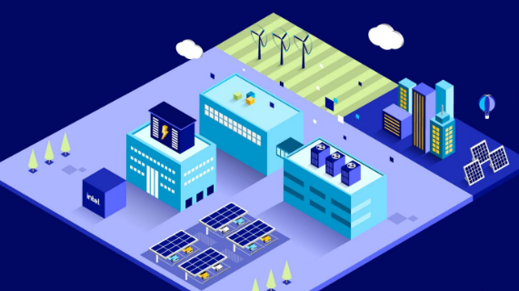
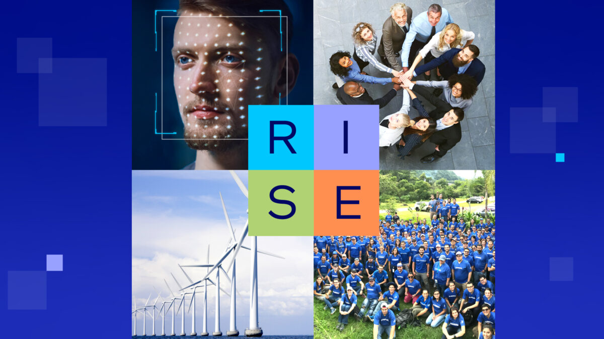

Intel: Sustainability Through the Ages

About Us
Intel Corporation is a global technology leader, founded in 1968 by Robert Noyce and Gordon Moore. For over five decades we have driven innovation in semiconductor manufacturing — powering the devices and infrastructure that shape our modern world.
Beyond technological advancement, Intel is deeply committed to environmental stewardship. We believe the future of innovation must be built on a foundation of sustainability. From reducing greenhouse-gas emissions to championing renewable energy, Intel is working to create a lasting positive impact on our planet.
Our sustainability journey spans generations — and it’s far from over. Explore our mission timeline below to see how Intel has evolved its environmental commitments from the company’s founding to today.
Our Mission
Tracing Intel’s path toward a sustainable future
Intel Founded
Robert Noyce and Gordon Moore rename the newly formed company NM Electronics to Intel Corporation, laying the foundation for decades of technological innovation.

First Microprocessor
Intel debuts the 4004, the world’s first commercial microprocessor, igniting the microprocessor revolution and propelling the future of computing devices.

8086 Processor
Launch of the 8086 processor, establishing the x86 architecture that drives countless PCs and servers in the modern era.

386 Processor
Intel introduces the 386 processor with 32-bit architecture, ushering in a new era of performance and multitasking for personal computers.

Peak GHG Emissions
This year marks Intel’s highest annual greenhouse-gas emissions for operations. Over subsequent years Intel invests heavily in chemical abatement, renewable energy, and energy-efficient manufacturing to reverse this trend.

RISE Strategy
Intel launches its RISE (Responsible, Inclusive, Sustainable, Enabling) strategy and 2030 goals, aiming to drive industry-wide progress on climate action, water stewardship, and waste reduction.

Net-Zero By 2040
Intel announces its commitment to achieve net-zero greenhouse-gas emissions (Scope 1 & 2) across its global operations by 2040, building on years of environmental initiatives.
Renewable Electricity
The company achieves 99% renewable electricity usage worldwide, helping to drastically lower carbon emissions and driving progress toward Intel’s long-term sustainability goals.
Sustainability Summit
Intel hosts its first Sustainability Summit, uniting suppliers, government officials, and industry leaders to collaborate on next-generation sustainable semiconductor manufacturing.
Our Commitments
Three pillars driving Intel’s sustainability agenda toward 2030 and beyond
Climate Action
Intel targets net-zero greenhouse-gas emissions across all Scope 1 and Scope 2 operations by 2040, backed by large-scale renewable energy procurement and continuous investment in chemical abatement technology.
Water Stewardship
Intel commits to restoring more water than it consumes in its manufacturing operations by 2030, partnering with local watershed programs to protect freshwater ecosystems in every community where it operates.
Waste Reduction
Intel strives to send zero total waste to landfill from its manufacturing sites, maximising material recovery and working with suppliers to build a fully circular approach across the semiconductor supply chain.
Stay Informed
Get the latest updates on Intel’s sustainability initiatives delivered to your inbox.